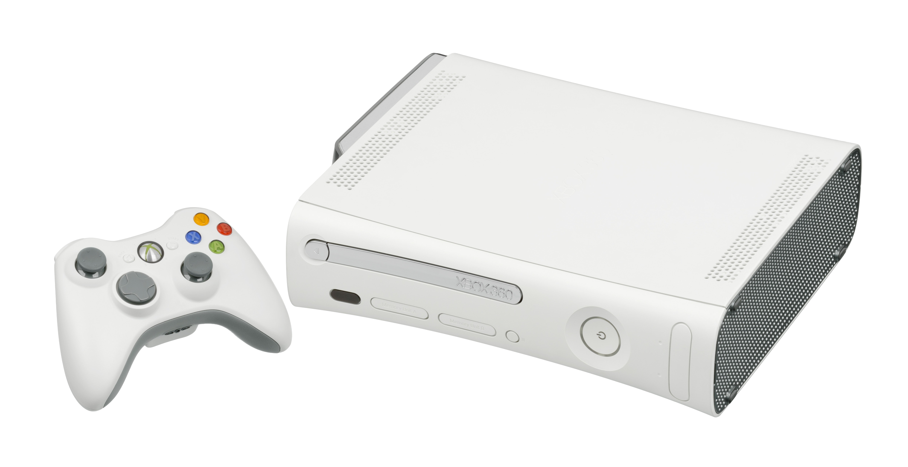
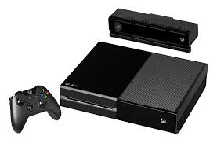

Xbox Original

The Xbox Original was Microsoft's first ever console, released on November 15, 2001. The Xbox was stronger graphically compared to its rivals, and was the first console to feature a built-in hard disk. In 2002, Xbox Live released for the console, having support with its original consoles through an Ethernet port. The service gave Microsoft a head start in online gaming, helping it get a head start against its rivals in online gaming. The console has sold 24 million units worldwide.
Xbox 360
The Xbox 360 was the successor to the Xbox Original, released on November 22, 2005. The console featured a much more expanded Xbox Live online service, being updated regularly. Xbox Live allowed users to play games online with friends, download games and game trials, purchase music and TV programs, and allowed access to 3rd-party content. The console included wireless controllers, more hard drive storage, and a purchasable Kinect motion camera. The console has sold 84 million units worldwide, being the 6th-highest-selling video game console in history.
Xbox One
The Xbox One was the successor to the Xbox 360, released on November 22, 2013. The console was marketed as an "all-in-one" entertainment system. Its controller was redesigned from the Xbox 360's to feature a redesigned body, D-pad, and triggers. The console places great emphasis on cloud computing, social networking features, and the ability to record or share video clips and screenshots form gameplay. The console can play Blu-ray Discs and overlay live TV programming. The console originally included a redesigned Kinect 2.0 sensor, providing improved motion tracking and voice recognition. A higher-end version, the Xbox One X, was released in Novmeber 2017, featuring upgraded hardware specs and 4K support. The console has sold 18 million units worldwide.
| Microsoft Franchise | Genre |
|---|---|
| Halo | 1st-Person Shooter |
| Forza | Racing |
| Gears of War | 3rd-Person Shooter |
| Mass Effect | Action/RPG |
| Crackdown | Sandbox/Adventure |